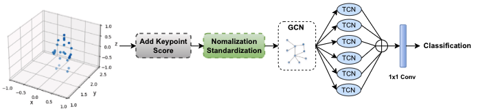
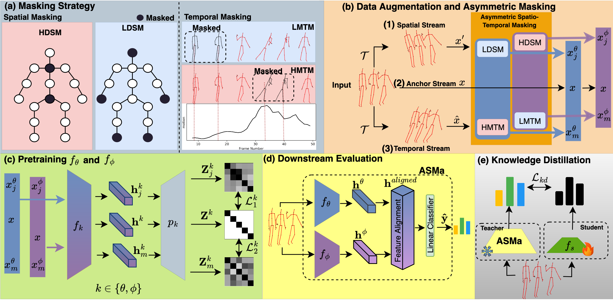
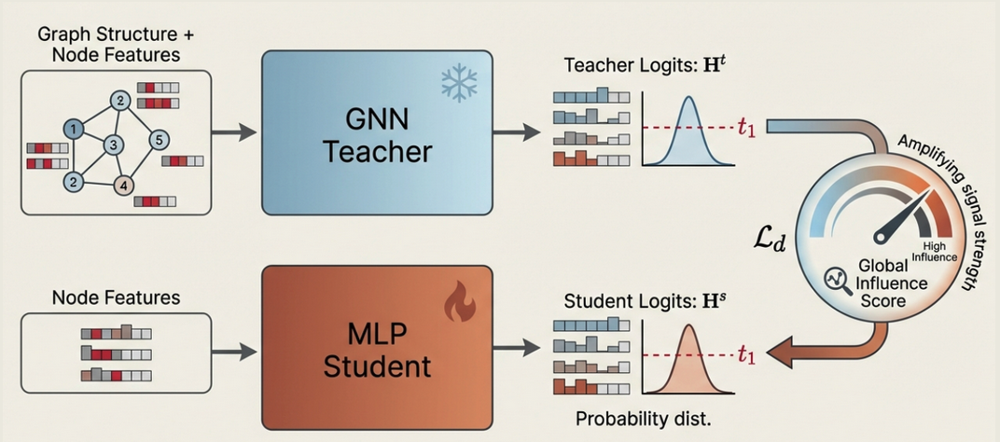
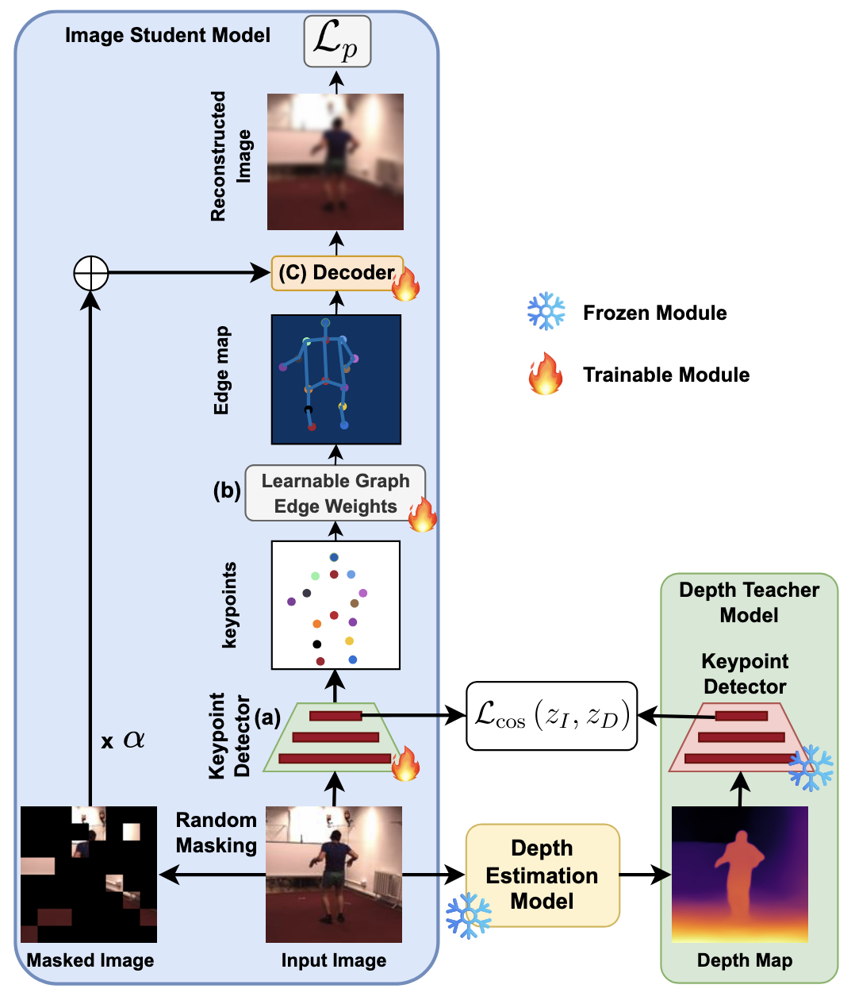
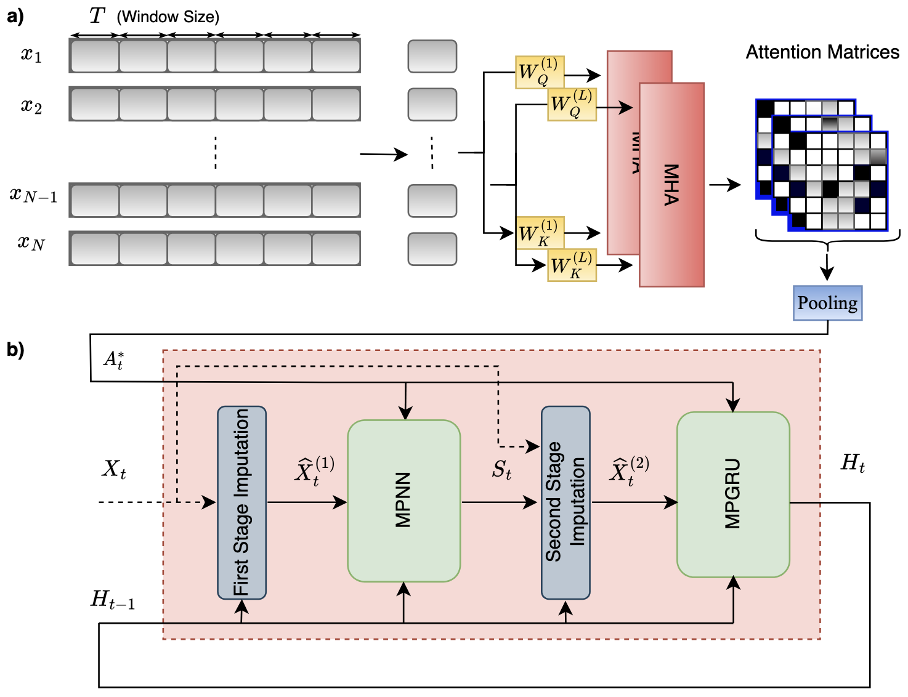
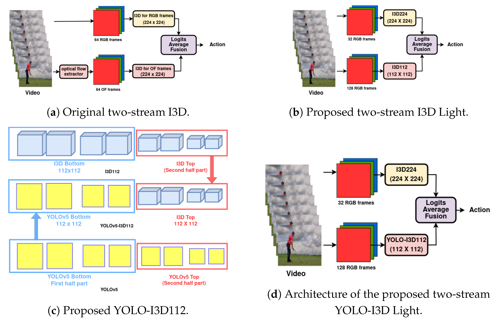
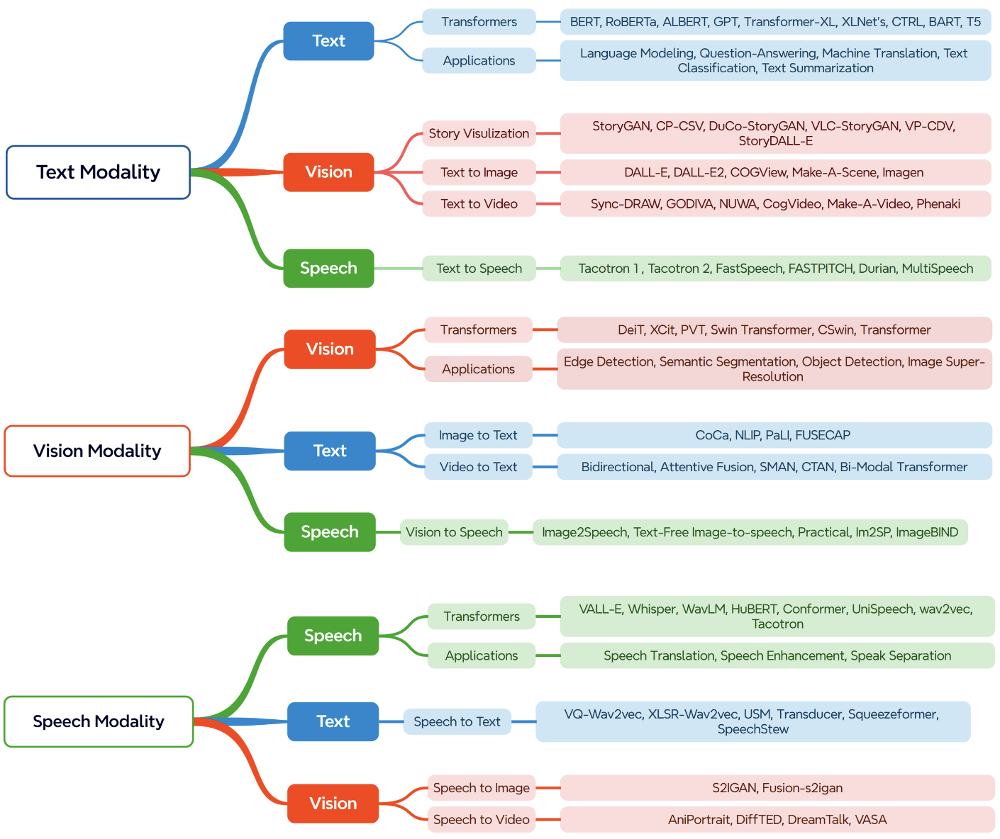
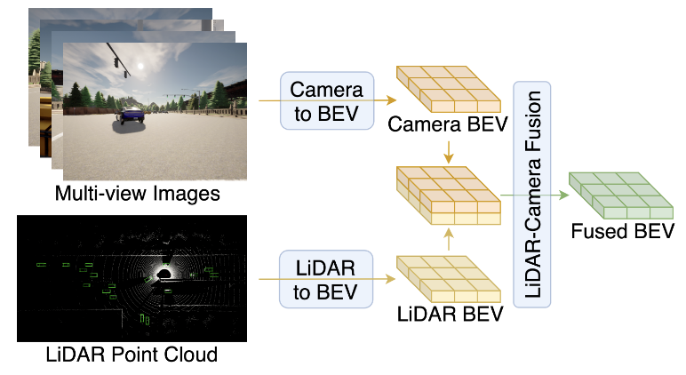
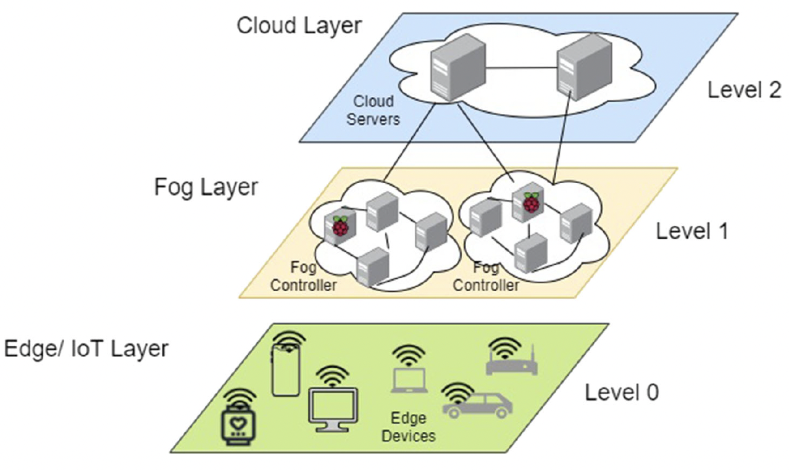

Z. Zhang, A. Anand, F. Zulkernine
Machine Learning with Applications (Elsevier), 2026

A. Anand, A. Eskandari, E. Rashno, F. Zulkernine
Transaction on Machine Learning Research (TMLR), 2026

A. Eskandari, A. Anand, E. Rashno, F. Zulkernine

A. Anand, E. Rashno, A. Eskandari, F. Zulkernine
ICMV (18th International Conference on Machine Vision, 2025)

A. Eskandari, A. Anand, D. Sharma, F. Zulkernine
IEEE COMPSAC 2025

R. Luo, A. Anand, F. Zulkernine, F. Rivest
Journal of Imaging 10 (11), 269, 2024

E. Rashno, A. Eskandari, A. Anand, F. Zulkernine
Under review at ACM Computing Survey

D. Qiao, F. Zulkernine, A. Anand
2024 International Conference on Digital Image Computing: Techniques and Applications (DICTA)

D. Mukherje, A. Anand
Multimedia Tools and Applications 82 (8), 12229-12243, 2023